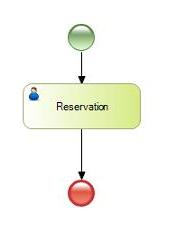
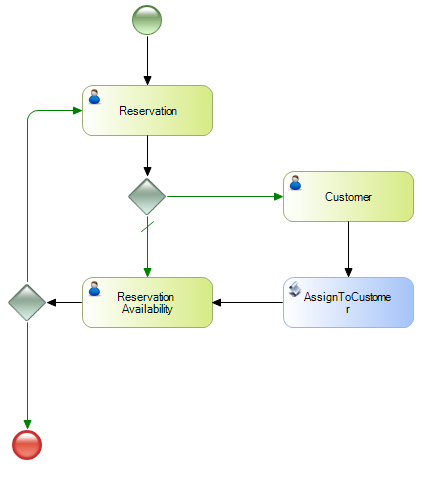

My first BPM Application for Smart Devices
This example explains how to create a Business Process Diagram assigning Smart Devices objects to user Tasks. If this is your first time creating a Business Process Diagram object, we recommend you to read My first BPM Application. If this is your first time using Objects for mobile applications development we recommend you to read My first Android application or My first iOS application. The best way of explaining is by using examples. This document is based on My first BPM Application, and so will be based on booking flight tickets.
This is a simple example that shows you how to use GXflow within the IDE to create a workflow for the GXflow Client for Smart Devices. As explained before it represents a simplified process for booking airline tickets, which consists of entering the reservation details into the system, with the operator registering any customer that is not registered. If the customer is already registered, the control will go straight to checking availability. If the reservation is available, the process ends, and if it's not available, the flow will return to where the reservation was entered to update the data. Step 1: Creating the objects that will be part of the processTwo transactions will be needed: Reservation and Customer. Reservation TransactionNote: the CustomerId attribute is defined to allow nulls, which is necessary for the example to work properly. RulesCustomerId.SetNull() If CustomerId.IsEmpty(); Customer TransactionReservationMapRelevantDataWe have the following procedure: Once the reservation is entered, it assigns the ReservationId and CustomerId Relevant Data. RulesParm(ReservationId,CustomerId); Note: ReservationId and CustomerId as attributes VariablesCode
&WorkflowApplicationData = &Workflowcontext.ProcessInstance.GetApplicationDataByName("ReservationId")
&WorkflowApplicationData.NumericValue = ReservationId
&WorkflowApplicationData2 = &Workflowcontext.ProcessInstance.GetApplicationDataByName("CustomerId")
if not CustomerId.IsNull()
&WorkflowApplicationData2.NumericValue = CustomerId
EndIf
Commit
ProcCondAssignedCustomerIdWe have the following procedure: this procedure checks if the Customer has been entered, returning 1 if so and 2 if not. RulesParm(in: &WorkflowProcessDefinition, in: &WorkflowProcessInstance, in: &WorkflowWorkitem, out: &ConditionalCode); VariablesCode
&CustomerIdAppData = &WorkflowProcessInstance.GetApplicationDataByName('CustomerId')
&CustomerId = &CustomerIdAppData.NumericValue
if &CustomerIdmerId = 0
&ConditionalCode = 2
Else
&ConditionalCode = 1
EndIf
CustomerMapRelevantDataWe have the following procedure: Once the Customer is entered, it assigns the CustomerId Relevant Data. VariablesCode
&WorkflowApplicationData = &Workflowcontext.ProcessInstance.GetApplicationDataByName("CustomerId")
&WorkflowApplicationData.NumericValue = CustomerId
Commit
AssignToCustomer ProcedureWe have the following procedure: Once the reservation and user are entered, it assigns that reservation to that user. RulesParm(in:&ReservationId, in:&CustomerId); VariablesCode
For each
Where ReservationId = &ReservationId
CustomerId = &CustomerId
Endfor
ProcCondReservationAvailableWe have the following procedure: this procedure checks if the Reservation is available, returning 1 if so and 2 if not. RulesParm(in: &WorkflowProcessDefinition, in: &WorkflowProcessInstance, in: &WorkflowWorkitem, out: &ConditionalCode); VariablesCode
&ReservationId = &WorkflowProcessInstance.GetApplicationDataByName('ReservationId')
For each
Where ReservationId = &ReservationId.NumericValue
if ReservationAvailable = False
&ConditionalCode = 2
Else
&ConditionalCode = 1
EndIf
EndFor
Step 2: Creating the activity diagram that models the processTo add an activity diagram all you have to do is add the Business Process Diagram object, like with any other object. Step 3: Applying Work With Pattern for Smart DevicesApply the Work With Pattern for Smart Devices to the Customer and Reservation transactions, see Applying Work With for Smart Devices Pattern for further details. Step 4: Associating the objects to the diagramTo mark the beginning of the process, drag a None Start Event symbol into the "TicketReservationSD" Business Process Diagram object. The first associated object will be the WorkWithDevicesReservation. To associate it, drag it from the KB Explorer to the line that connects the Start and End connectors in the diagram. Or, drag a User Task from the Toolbox, to the properties windows and press the button in the SD Application property. You can change its name by pressing F2 button to "Reservation":  You need to create Relevant Data with the same name and data type as the transaction's primary key. This data, just like the rest of the relevant information, will be known throughout the flow. Once the Relevant Data is created, open the SD Application property, and edit the Application to "WorkWithDevicesReservation.Reservation.Detail" and select the Relevant Data created before in the "Relevant Data" column. The purpose of this change is to call the WorkWithDevicesReservation in insert mode. Then open WorkWithDevicesReservation and edit the source of the 'Save' event as follows:
Event 'Save'
Composite
SDActions.Save()
ReservationMapRelevantData.Call(ReservationId,CustomerId)
return
EndComposite
EndEvent
This is an important step. Relevant Data is not mapped automatically when using Smart Devices Objects, so that the call to the Procedure ReservationMapRelevantData must be added. The second step consists in adding the conditional that defines whether or not the customer is registered and associated to the reservation transaction. To do so, add the exclusive gateway symbol from the diagram toolbar (by default it is located on the right-hand side of the screen), as shown in the figure below. Once the gateway has been inserted, you have to define Condition procedure property to the Procedure ProcCondAssignedCustomerId. This Gateway will make the flow follow the usual course or follow the alternative course to register a customer. Next you need to add the WorkWithDevicesCustomer to the diagram and connect it with the conditional's alternative route, as follows:
Change its name to "Customer" by pressing F2 button. Note: To connect the gateway with the 'Customer' task, click the right-hand side of the conditional and drag the arrow to the left-hand side of the task. Its type is defined in the route properties. Now add the call to the Procedure CustomerMapRelevantData in order to update the RelevantData — just like with the WorkWithDevicesreservation, open the WorkWithDevicesCustomer and edit the source of the 'Save' event as follows:
Event 'Save'
Composite
SDActions.Save()
CustomerMapRelevantData.Call(CustomerId)
return
EndComposite
EndEvent
To complete the conditional you have to define the condition that will make the flow follow one route or the other. To this end, the IDE offers a condition editor that allows you to express the condition returned by the Condition Procedure. Select the connector to the WorkWithDevicesCustomer and edit the Conditional Code to the value "2". By defining this condition, non-registered customers—CustomerId.IsEmpty() = True—are registered. Next, following the usual flow, the WorkWithDevicesReservation is added again. This task evaluates whether the reservation is available to be issued or not; change its name to "Reservation Availability" by pressing F2 button.
Once the reservation availability has been determined, another gateway must be defined as follows to evaluate the condition: If the reservation is available, the process is finished. If it is not available, the flow goes back to the initial task in order to change the reservation details. Once the gateway has been inserted, you have to define the Condition procedure property to the object ProcCondReservationAvailable. So, after registering the customer, you have to assign him or her to the reservation and check availability. Edit the connector to the End Event an set the Conditional Code to the value "1" and the Conditional Code of the connector to Reservation to the value "2". To complete the flow, define the alternative course to be followed when the customer is not registered. So, after registering the customer, you have to assign him or her to the reservation and check availability. To do so, add the procedure AssignToCustomer and the connection routes as follows:  Once the procedure is added to the diagram, the parameter rule (parm) is automatically evaluated. If attributes or variables with the same name and type as the relevant data are found, they will be instantiated with their values. In this case, the &ReservationId and &CustomerId variables will be associated with the values of the corresponding relevant data. Step 5: Importing and configuring the GXflow Client for Smart DevicesIn order to run the newly created Business Process Diagram it is required the GXflow Client for Smart Devices to be configured. Follow the steps from HowTo: Configuring GXflow For Smart Devices in order to do so —skip the step of creating a Buisiness Process Diagram. Once the GXflow Client for Smart Devices has been imported you must add a call to each of the Objects for mobile applications development, that are used in your Business Process Diagram objects, to the "WorkflowSDClient" Menu object in order to be included in the Smart Devices application.
Event 'DummyCalls'
WorkWithDevicesReservation.Reservation.Detail(1)
WorkWithDevicesReservation.Reservation.List()
WorkWithDevicesCustomer.Customer.Detail(1)
WorkWithDevicesCustomer.Customer.List()
EndEvent
Note: It is not required to use the "DummyCalls" event in any item of the "WorkflowSDClient" Dashboard—including the event is enough. Step 6: Running the processBefore running the process for the first time, do a Build All, lastly run the application by pressing F5. Next, GeneXus performs the necessary actions to run this diagram and show the changes made. The steps that follows are:
Whether or not all these steps are performed will depend on the changes made; that is to say, a change in the diagram will cause all its objects to be specified, generated and compiled, impacting the diagram. When generating for Android, the emulator will run automatically with the application, and the user will be requested to login, as shown in the figure below:
Below is the process flow for both cases: the first case corresponds to a customer that has to be registered, and the second case corresponds to a customer that is already registered in the system. Example 1: When the user needs to be registeredCreate a new Task, once created tap on it, in order to open the preview: Next press the execute button in order to take the task: Then add the reservation details, but left the CustomerId field blank because the customer is not registered yet: After the reservation details are inserted complete the task: Now you have to register a new customer for the reservation. Once the Reservation and Customer are registered, the procedure that assigns the customer to the reservation is automatically executed. Finally, to end the process, you have to define whether the reservation is available or not. Notice that the customer has been asociated to the reservation.
Example 2: When the customer is already registeredAs with case 1 you need to create a new task, next enter the reservation details including the Customer, who in this case is registered in the system. Next, the reservation is set to 'not available' and the flow returns to the beginning where the reservation data can be changed. See Also |


| Backlinks | |
| Beginners in GeneXus BPM Suite | Toc:GeneXus BPM Suite |
| HowTo: Configuring GXflow For Smart Devices | |
| Looking for help in GeneXus BPM Suite and GXflow? |